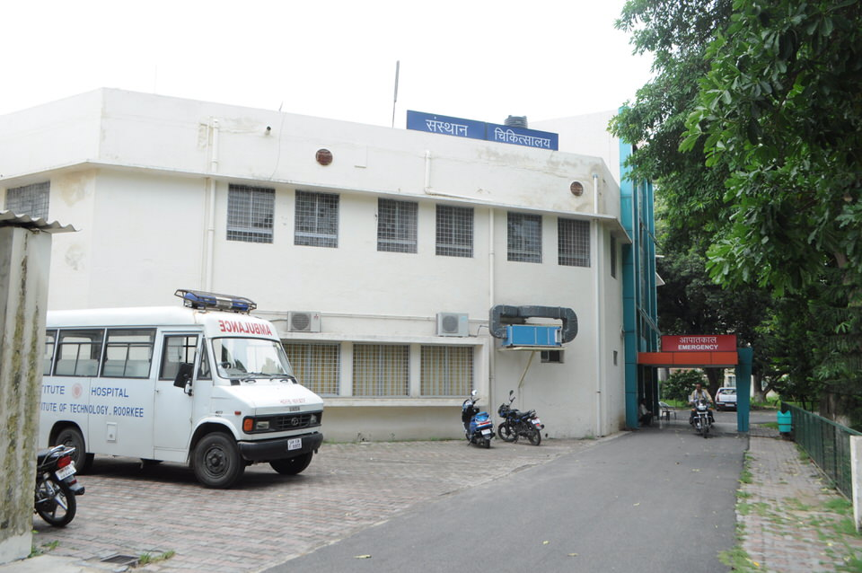
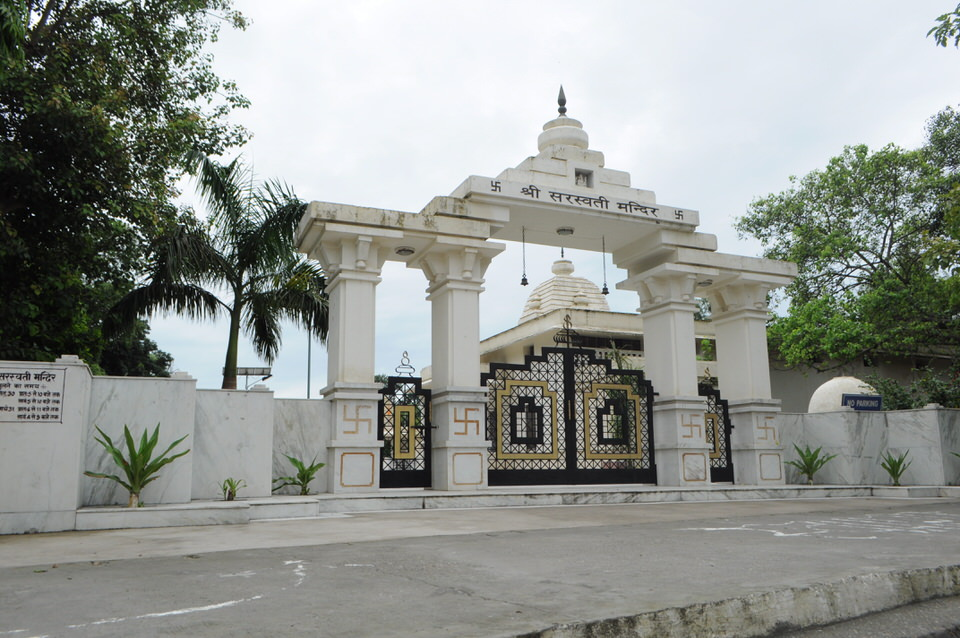

Banks
IIT Roorkee has two banks to help students and staff make their transactions ease.And you can open an account on the opening day of the college.Also these banks give loans to the students to support their studies.
Hospital
Institute hospital IIT Roorkee is a 50 Beded hospital offering OPD , emergency and IPD , Laboratory , x-ray & ECG services to faculty , staffs and students . Ambulance services for referring patients to higher centres works in optimal.It also has online OPD booking system.

Places of worship

This is the temple inside the campus where the students can go and devote their feelings to the god.We celebrate all the religious festivals here.IIT Roorkee is a place where people of different faiths come together in learning. To ensure that all their religious customs are maintained, a number of places of worship are constructed on campus. A Temple dedicated to the Goddess Saraswati, near the football field in Saraswati Kunj, a Church near the main gate and a Mosque near Khosla International House, all dot the campus and add to its charm. Among the most peaceful places on campus, all these places of worship are the prime destination when all one wants to do is get away from it all.
Placement & Internship cell
The place where the dream of every student gets true.It heps and co-ordinates between the students and companies during placements.It has a great heritage and history of great records in placements.